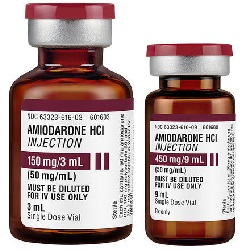

Amiodarone HCL (Cordarone, Pacerone) အကြောင်းသိကောင်းဖွယ်ရာ အဖြာဖြာ

Amiodaroneဆိုတာဘာလဲ?
-Amiodarone ဆိုတာ နှလုံးခုန်မမြန်ခြင်း အတွက်ဆေး တစ်မျိုးဖြစ်ပါတယ်။ နှလုံး ခုန် မမှန်ကန်မှု ကိုဖြစ်စေသော လျှပ်စစ်ဓာတ်ကိုတားဆီးပေး သောဆေးဖြစ်ပါတယ်။
ဆေးကိုဘယ်နေရာတွေမှာ သုံးလဲ?
-Amiodarone ကို ပြင်းထန်သော(အသက်အန္တရယ်ရှိသည်အထိ ပိ ုပြင်းထန်နိုင်သော) နှလုံးခုန်နှုန်း မမှန်သည့်ရောဂါများ(ဥပမာ – နှလုံး သွေးပြန်ခန်း မှ ကြာရှည် ခုန်နှုန်း မမှန်ခြင်း/ နှလုံးခုန်မြန်ခြင်း ) တို့မှာသုံးပါတယ်။ နှလုံးခုန်နှုန်း ပုံမှန်ဖြစ်စေရန် နှင့် ပုံမှန်နှလုံးခုန် နှုန်း ကိုထိန်းသိမ်း ရန်လည်း သုံးလေ့ရှိပါတယ်။
ဆေးရဲ့ဆိုးကျိုး ဘာတွေရှိလဲ?
–မူးဝေ၊ ပျို့အန်၊ ဝမ်းချုပ်ခြင်း၊ ခံတွင်းပျက်ခြင်း၊ ကတုန်ကယင်ဖြစ်ခြင်း၊ မောပန်းလွယ်ခြင်း တို့ဖြစ်တတ်ပါတယ်။ ပြင်းထန်သော ဆိုးကျိုးများ နှင့် အလွန်ပြင်းထန်သော ဆိုးကျိုးများမှာ သွေးထွက်/သွေးခြေဥလွယ်ခြင်း၊ ခြေ/လက် ထုံကျင်ခြင်း၊ ထိန်ချုပ်ရခက်ခြင်း၊
မူမမှန်လှုပ်ရှားမှုများဖြစ်ခြင်း၊ နှလုံးရောဂါလက္ခဏာဖြစ်ခြင်း/ပိုဆိုးလာခြင်း (ဥပမာ ခြေ/လက် ဖောရောင်ခြင်း)၊ လှဲလျောင်းလျှင် အသက်ရှူကြပ်လာခြင်း၊ နှလုံးခုန်နှုန်းမြန်/နှေး/ပို၍မမှန်ုဖြစ်ခြင်း၊ အလွန်အမင်းမူးဝေခြင်း နှင့် သတိလစ်ခြင်းတို့ဖြစ်တတ်ပါတယ်။ အဆိုပါလက္ခဏာများ ဖြစ်လျှင် အန္တရာယ်ရှိသဖြင့် နီးစပ်ရာဆေးခန်းသို့အမြန်ဆုံးပြပါ။ ဆေးမတည့်ခြင်း၊ တိုင်းရွိတ်ရောဂါ နှင့် အမြင်ဝေဝါး ခြင်းဖြစ်နိုင်သော်လည်းရှားပါတယ်။
ဆေးသောက်လျှင်ဘာတွေသတိထားရမလဲ?
–ဆေးမတည့်ခြင်း၊အဆုတ်ရောဂါ၊တိုင်းရွိတ်ရောဂါ ရှိ/မရှိ ဆရာဝန်ကိုကြိုပြောသင့်ပါတယ်။ Amiodaroneသည် နှလုံးခုန်နှုန်းကိုပြောင်းလဲစေသော အခြေအနေတစ်ရပ် (ECG တွင် QT ရှည်ခြင်း) ကိုဖြစ်စေတတ်ပါတယ်။ အဆိုပါအခြေအနေသည် ဆီးဆေးများသုံးထားခြင်း၊ နှလုံးရောဂါ အခံရှိခြင်းစသော လူနာများတွင်ပိုဆိုးစေသောကြောင့် ဆရာဝန်အား ကြိုပြောကာတိုင်သင့်ပါတယ်။ မူးဝေခြင်းကို ပိုဆိုးစေသောကြောင်း ဆေးသောက်ပြီး ကားမမောင်းသင့်ပါ။ အရက်လည်းလျှော့သောက်ရပါမယ်။
ကိုယ်ဝန်ဆောင်များ အနေဖြင့်လည်း မွေးလာမယ့် ကလေးအားထိခိုက်စေနိုင်သောကြောင့် ဆရာဝန်နှင့် သေချာတိုင်ပင်ပြီးမှ သောက်သင့်ပါတယ်။ နို့တိုက်မိခင်များ အတွက်လည်း ကလေးအတွက် အန္တရာယ်ရှိသဖြင့် မသောက်သင့်ပါ။
ဆေးအာနိသင်ဘယ်လိုရှိလဲ?
-Finglimod, အသည်းရောင်အသားဝါစီပိုး အတွက်ဆေးများ (ledipasvir/sofoabuvir, sofosbuvir) တို့နှင့် တွဲသောက်လျှင့် အာနိသင်ပြောင်းနိုင်သဖြင့် မသောက်သင့်ပါ။ Dofetilide,pimozide, procainamide, quinidine, sotalol, macrolide ပိုးသတ်ဆေးများ (ဥပမာ clarithromycin, erythromycin) , quinolone ပိုးသက်ဆေးများ (ဥပမာ levofloxacin) တု့ိ နှင်တွဲသောက်လျှင် နှလုံးခုန် မမှန် (QT ရှည်ခြင်း) ကို ပိုဆိုးစေသောကြောင့် တွဲမသောက်ရပါ။
Amiodarone မှာ Clopidogrel, phenytoin, အဆီကျဆေးများ (ဥပမာ atorvastatin , lovastatin ), trazodone, warfarin တို့အား ခန္တာကိုယ်မှ စွန့်ထုတ် မှုကိုတားဆီးစေတတ်သဖြင့် သတိထားသင့်ပါတယ်။
ဆေးသောက်လွန်လျှင်ဘာဖြစ်နိုင်လဲ?
–နုံးချိပျော့ခွေ အားမရှိခြင်း၊ အလွန်အမင်းမူးဝေခြင်း၊ နှလုံးခုန်နှုန်း အလွန်နှေးခြင်း နှင့် သတိလစ်ခြင်း တို့ဖြစ်နိုင်ကာ အသက်အန္တရယ်ရှိသဖြင့် အမြန်ဆုံး အရေးပေါ်ဆေးကုသမှုခံယူသင့်ပါတယ်။
* အထူးသတိပြုရန်မှာ Amiodarone သည် နှလုံးခုန် မမှန်ခြင်းလူနာများအတွက်အကျိုးများသော်လည်း ရံဖန်ရံခါ ရောဂါအခြေအနေကို ပိုမိုဆိုးရွားစေသဖြင့် ဆေးစသောက်လျှင် ဆေးရုံတွင် နေကာ စောင့်ကြည့်မှုခံယူသင့်ပါတယ်။ ထို့အပြင် Amiodarone သည် ခန္တာကိုယ်ထဲတွင် အပတ် မှ လ သို့ ကြာကြာ နေနိုင်သဖြင့် ဆိုးကျိုးလက္ခဏာများ သည် ဆေးဖြတ်ပြီး အချိန်ကြာမှ ပေါ်လာနိုင်သည်ကိုသတိထားသင့်ပါတယ်။ *